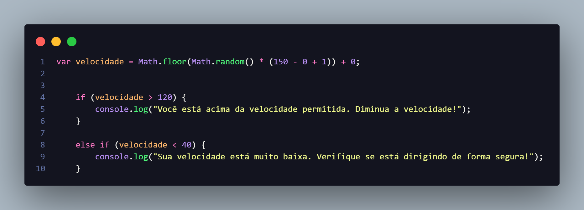

Atualizado por Ronildo Lima em 30 de Abril 2024
A problemática refere-se ao desenvolvimento e implementação de um sistema de detecção
de
fadiga com várias finalidades específicas. Esse sistema visa identificar uma série de sinais que podem indicar
diferentes condições adversas ao dirigir, tais como cansaço, alcoolismo, desatenção e velocidade excessiva.
Decidimos usar o JavaScript como base do nosso sistema especialista, pois, ele
oferece
uma ampla gama de recursos que podem ser aproveitados para desenvolver sistemas especialistas interativos,
eficientes e acessíveis. Sua flexibilidade e compatibilidade com outras tecnologias web o tornam uma escolha
atraente para implementar sistemas especialistas em uma variedade de contextos.
Decidimos usar a biblioteca json-rules-engine para o desenvolvimento do nosso
sistema, visto que, um sistema
especialista é um programa de computador que emula a tomada de decisões humanas em um domínio específico,
e utilizando conhecimento especializado armazenado em forma de regras, definimos as regras em JSON que
descrevem o conhecimento especializado, integramos ao mecanismo de regras e por fim avaliamos
em relação aos dados de entrada para tomar decisões automatizadas.
Esse fluxograma ilustraria visualmente como o sistema avalia os sintomas do paciente
em relação às regras de fadiga, identifica possíveis condições de fadiga com base nos limiares definidos e
fornece feedback relevante ao usuário com base nos resultados da avaliação.
Esse fluxograma ilustraria visualmente como o sistema avalia os sintomas do paciente
em relação às regras de fadiga, identifica possíveis condições de fadiga com base nos limiares definidos e
fornece feedback relevante ao usuário com base nos resultados da avaliação.
| Sintomas |
Níveis elevados |
Níveis aceitáveis |
Níveis normais |
| Bocejos frequentes |
Acima de 7 |
Acima de 3 e menor que 7 |
Até 3 |
| Olhos avermelhados |
Acima de 6 |
Acima de 2 e menor que 6 |
Até 2 |
| Inchaço facial |
Acima de 8 |
Acima de 3 e menor que 8 |
Até 3 |
| Movimentos lentos |
Acima de 6 |
Acima de 3 e menor que 6 |
Até 3 |
| Movimentos involuntários |
Acima de 9 |
Acima de 5 e menor que 9 |
Até 5 |
| Olhos lacrimejantes |
Acima de 8 |
Acima de 4 e menor que 8 |
Até 4 |
| Cabeça curvada |
Acima de 7 |
Acima de 3 e menor que 7 |
Até 3 |
Aqui estamos gerando uma velocidade aleatória com base nos mininos e maximos
permitidos no CTB (Código de
trânsito brasileiro)
dentro de rodovias estaduais e federais. Valores entre 40 e 120 km/h são os permitos entre vários pontos.
Acima ou abaixo dentre os limites, gerarão alertas para o motorista.
OBS: Ainda falta implementar limites em KM de rodovias. EX: KM 240 da Rodovia A permite velocidade de
80Km/h.

{kind=link}